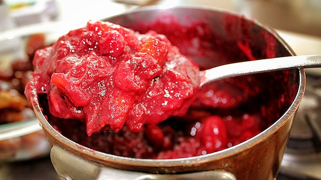

Cranberry Sauce!

How to make cranberry sauce without refined sugar!
Many may not realize is that cranberries in their native state are incredibly bitter. Therefore, store-bought cranberry sauce is infused with an incredible amount of preservatives, artificial flavoring & colors as well as insane amounts of refined sugar in order to render the end product sufficiently sweet, pleasant to the eye and palatable to the typical consumer. Even homemade versions typically require at least a full cup of refined sugar.
Introducing my take on Cranberry Sauce, our second in this series of easy to prepare, nutritious and delicious PlantPowered holiday recipes we are publishing.
Ingredients:
- 2 packages fresh organic cranberries
- 10 organic dates soaked in filtered water for at least 1 hour
- 1 cinnamon stick
- 2 tablespoons raw(prefurably manuka) honey(or maple syrupfor those that prefer to avoid honey)
Preparation:
- In small saucepan, add the cranberries plus 1 cup of water. Cook on medium heat until the mixture becomes syrup-like and the berries are soft and glazed.
- Add 10 soaked dates, pits removed. You can also experiment with adding a strip of or orange or lemon zest for a little citrus flavor accent. Add the water from the soaked dates and 1 cinnamon stick broken in half.
- Continue to cook for another 5 minutes until the dates break down.
- Turn off heat and let cool.
- Before serving, remove the cinnamon stick. The mixture will take on a darker red hue due to the dates and cinnamon.
- OPTIONAL: add the honey or maple syrup, but only for those that prefer the extra sweetness. Personally, mine didn't need it this time. The dates rendered the dish plenty sweet.
Yes, it's that easy!
Serve & Amaze!